看看《Gut》怎么用单细胞解析冷肿瘤、热肿瘤+免疫分型
原文：https://mp.weixin.qq.com/s?__biz=MzAwMzIzOTk5OQ==&mid=2247538688&idx=2&sn=4833e79f105f2fdf6cf47cb7bad1c8da&chksm=9b3c2150ac4ba84655cd2d7b8ab777b9d46efe658d5c7588d2500f4ade0600bc05985a6e7f57#rd 合集：文献速递
一、背景概述
肝细胞癌（HCC）是全球癌症死亡的第三大原因 ，预计到2040年，其全球发病率和死亡率将上升超过50%。HCC主要在慢性肝炎的背景下发展，其发病机制复杂多样，包括慢性病毒性肝炎、酒精滥用和脂肪性肝病等，这使得靶向治疗面临挑战。
**脂肪性肝病（**SLD ）包括酒精性和非酒精性脂肪性肝病或脂肪性肝炎，对免疫细胞功能有负面影响。已有研究表明在代谢功能障碍相关脂肪性肝炎（MASH）肝脏中，特别是CXCR6+ PD-1+自身攻击性和促炎性CD8+ T细胞的积累，与疾病进展至HCC以及对PD-1/程序性死亡配体1（PD-L1）通路靶向检查点抑制的不良反应有关。然而，对于这种HCC亚型的肿瘤微环境（TME）的全面高维单细胞和空间分析仍然较少。
这篇文章主要聚焦于SLD-HCC这一疾病，利用单细胞RNA测序、空间转录组学和蛋白质组学验证技术，揭示SLD-HCC中的空间免疫互作组和抗肿瘤免疫机制。这些研究不仅有助于我们更深入地理解HCC的免疫微环境，还为开发新的免疫治疗策略提供了重要的理论基础。
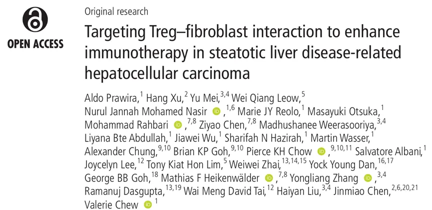
期刊：Gut
IF=25.8
DOI:10.1136/gutjnl-2025-335084 了解更多单细胞和空间转录组课程：
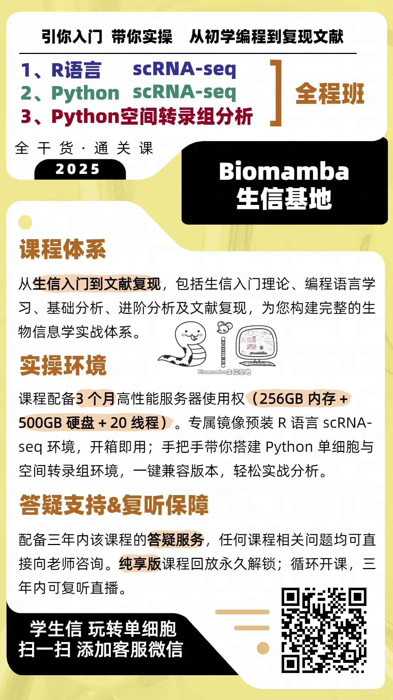
如果需要数据分析指导 、生信热点全文复现 、自测数据个性化分析 辅导、常态化实验学习，欢迎联系客服微信[Biomamba_zhushou]
二、主要内容
一：SLD-HCC微环境中单细胞转录组学分析
作者采用多组学方法（Fig.1A），研究了脂肪性肝病相关肝细胞癌（SLD-HCC）和非脂肪性肝病相关肝细胞癌（非SLD-HCC）的肿瘤微环境（TME）。单细胞转录测序结果显示作者对65,606个单细胞进行无监督聚类，识别出27个聚类，这些聚类被归类为17种主要细胞类型（Fig.1B-C），包括免疫细胞、成纤维细胞、内皮细胞和肝细胞群体等。细胞比例分析显示，大多数肝细胞来自肿瘤组织，而其他细胞类型则来自肿瘤和非肿瘤组织（Fig.1D）。
之后，作者仅从肿瘤组织中分离细胞，并比较SLD-HCC与非SLD-HCC中各个细胞类型的表型。通路分析表明，与非SLD-HCC相比，SLD-HCC 肿瘤微环境CD4+和CD8+ T细胞中免疫或炎症反应通路明显下调，而调节性T细胞（Tregs）、内皮细胞（ECs）和癌症相关成纤维细胞（CAFs）中脂质或脂肪酸相关过程明显上调（Fig.1E），且Tregs细胞中TXNIP、FABP1以及载脂蛋白家族的成员表达明显上调，与抗原呈递（HLA-DRB5和HLA-DPA1）、淋巴细胞激活（CREM、IL2RA和ICOS）以及免疫球蛋白基因（IGKC、IGHG3和IGLC2）相关的基因明显下调（Fig.1F）。
以上结果表明SLD-HCC中的CD4+和CD8+ T细胞在脂肪性微环境中可能受到抑制，从而减弱了抗肿瘤免疫反应，且微环境中存在明显的代谢重编程 ，特别是在Tregs、成纤维细胞和ECs中，这些细胞类型中脂质代谢相关通路均上调，反映了它们对脂肪性微环境的共同适应性，很有可能影响肿瘤的进展和免疫反应。
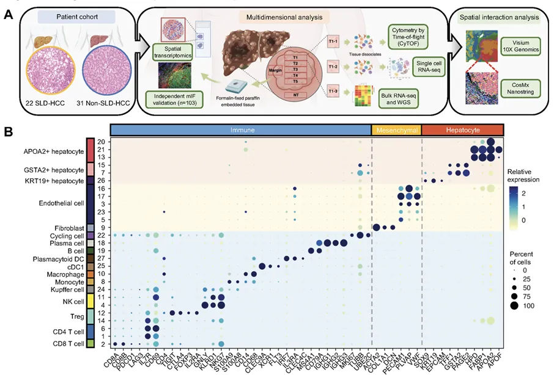
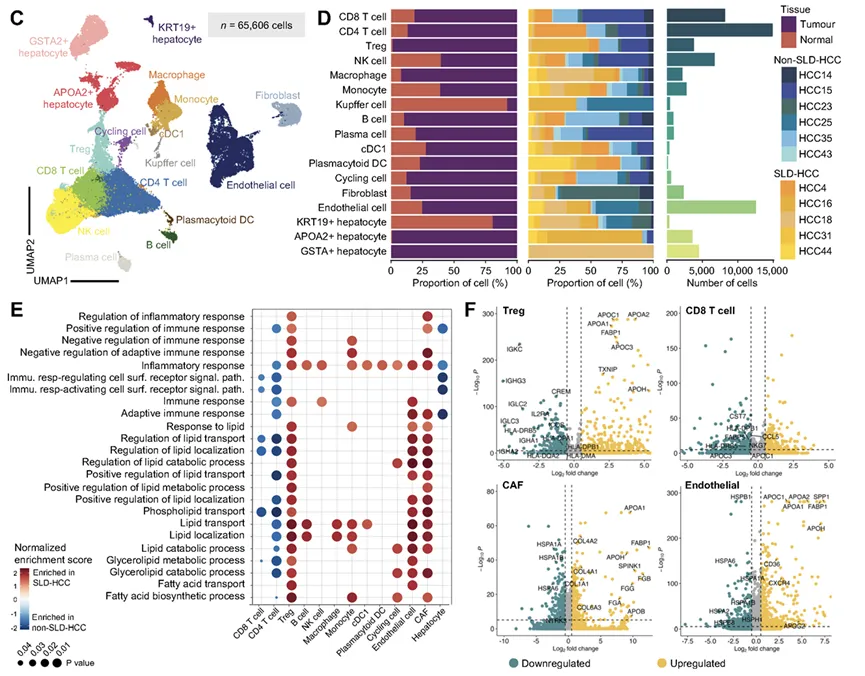
Fig.1
二：SLD-HCC的免疫表型分析揭示免疫抑制和**“冷”**肿瘤微环境
基于转录组分析表明SLD-HCC中富集的关键细胞亚群参与免疫调节，之后作者进一步使用CyTOF技术对SLD-HCC（n=17）和非SLD-HCC（n=27）中的肿瘤浸润性免疫细胞（TILs）进行了表型分析，无监督聚类识别出49个聚类，主要包括CD4+ T细胞、CD8+ T细胞、B细胞、自然杀伤（NK）细胞和抗原呈递细胞（Fig.2A）。细胞密度与亚群分布分析显示， SLD-HCC中肿瘤内CD4+ T细胞密度更高，而CD8+ T细胞则相对耗竭（Fig.2B-C）。与预后不良相关的免疫抑制性CD4+ T细胞亚群，包括CD25+FOXP3+ Tregs和表达PD-L1、GITR和PD-1的CD4+记忆T细胞，在SLD-HCC中显著富集（Fig.2D-E）。综合来看，这些数据表明SLD-HCC具有免疫抑制和“冷”（非T细胞炎症）肿瘤微环境， 与上文的单细胞RNA测序（scRNA-seq）结果一致。
在上文的基础上，作者进行了多色免疫荧光（mIF）分析，与CyTOF结果一致，作者观察到SLD-HCC中总CD4+ T细胞、记忆CD4+ T细胞和Tregs显著富集，而CD8+ T细胞则减少（Fig.2F-G），由于免疫排斥，表现为肿瘤内细胞毒性CD8+ T细胞的耗竭，已与Wnt信号通路相关联，作者发现SLD-HCC显示出更高的Wnt信号通路评分，与免疫排斥肿瘤一致（Fig.2H），SLD-HCC还显示出较低的新抗原评分（Fig.2I）。
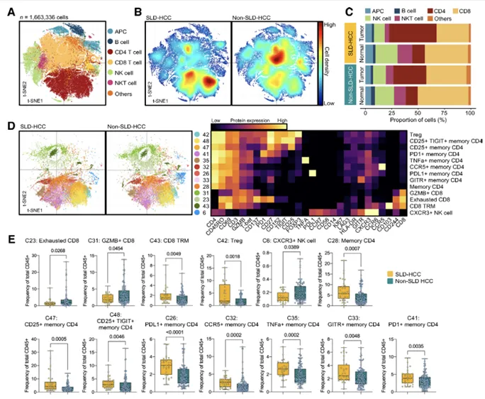
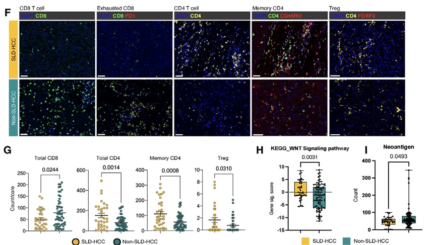
Fig.2
三：空间转录组学分析揭示SLD-HCC的独特空间结构
为了揭示通过scRNA-seq和CyTOF分析发现的关键SLD-HCC相关细胞群体的空间组织，作者对7例SLD-HCC和5例非SLD-HCC的FFPE组织样本进行了空间转录组学（ST）分析，使用的是10x Genomics的Visium空间基因表达分析（Fig.3A）。对所有组织切片的标准化数据表明，所有患者样本中的点在均匀流形近似和投影（UMAP）中均匀分布（Fig.3B）。对细胞的位置进行评分，发现免疫细胞得分较高的点也显示出成纤维细胞和内皮细胞（ECs）的得分较高，表明它们在组织中彼此接近（Fig.3C）。为了理解细胞在空间背景中的相互作用，作者使用SpaCET分析了各个组织样本（Fig.3D），结果显示SLD-HCC中Tregs与CAFs和ECs的空间接近性更高，这可能促进了它们之间的功能协同作用（Fig.3E）。与非SLD-HCC相比，SLD-HCC显示出独特的空间结构，特别是在肿瘤边缘区域，免疫细胞与基质细胞的相互作用更为复杂（Fig.3F）。这种空间结构的差异可能影响肿瘤的进展和免疫反应。
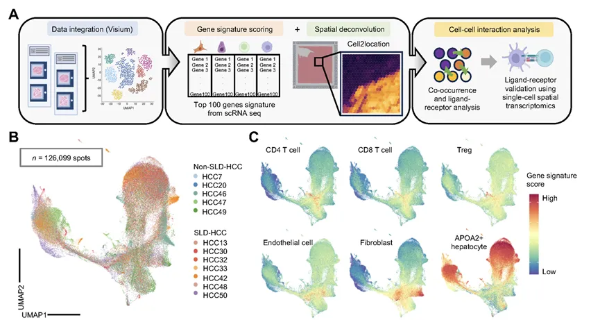
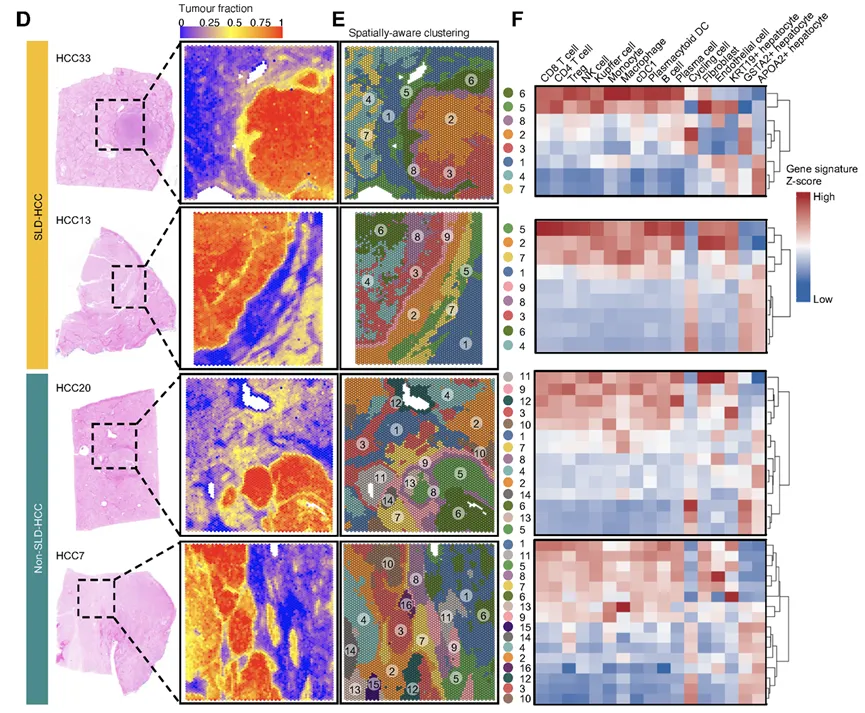
Fig.3
四：Treg与成纤维细胞在SLD-HCC肿瘤边缘的相互作用
为了进一步细化上文提到的相互作用，作者使用CosMx空间分子成像仪，对两例SLD-HCC和两例非SLD-HCC的FFPE组织进行了单细胞分辨率的空间转录组学分析。组织切片用CD45（免疫细胞）、CD3（T细胞）、泛细胞角蛋白（上皮细胞）和DAPI（细胞核）进行染色（Fig.4A）。细胞分割识别出152,214个细胞，Leiden聚类将这些细胞分类为25种细胞类型，并基于它们的高表达基因进行注释（Fig.4B），鉴定出的细胞群体包括CD4+和CD8A+ T细胞、髓系和树突状细胞群体（CD74、CIITA和HLA-DPA1）、浆胞（IGHG1、IGHG2和JCHAIN）和成纤维细胞（COL1A1、COL1A2和COL5A1）（Fig.4C），与前文scRNA-seq聚类一致。肝细胞是发现的最丰富的细胞类型（Fig.4D）。接下来，作者对CosMx数据进行邻域富集分析，以验证在CellChat和Visium分析中识别的潜在细胞间相互作用。结果显示CAFs与Tregs存在显著相互作用（Fig.4E）。，且作者对于scRNA-seq数据进行了细胞类型解卷积，结果也发现并一致地发现在SLD-HCCs与非SLD-HCCs的肿瘤边缘，Tregs与CAFs之间存在显著相关性（Fig.4F）。mIFf分析结果也显示关注肿瘤边缘附近的FOVs中Tregs富集（Fig.4G-H）。并且Tregs与成纤维细胞之间的平均距离更短（Fig.4I），证明了SLD-HCCs肿瘤前沿潜在的Treg-CAF相互作用。以上结果表明作者进一步研究Treg与CAF在SLD-HCC肿瘤边缘相互作用的生物学意义，特别是这种相互作用如何影响肿瘤的进展和免疫反应。
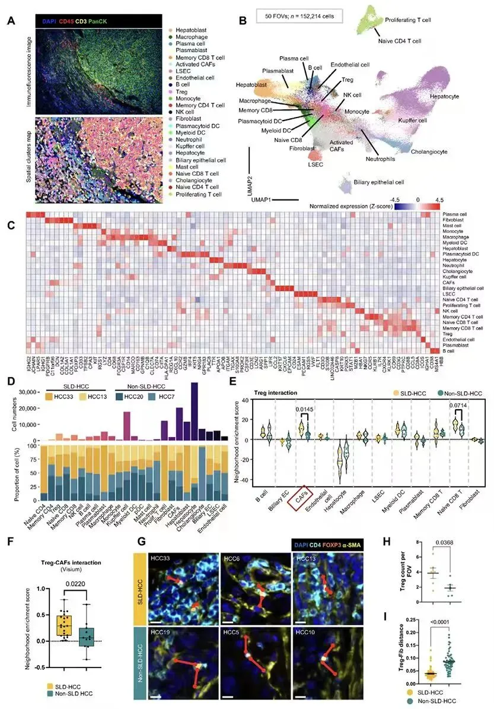
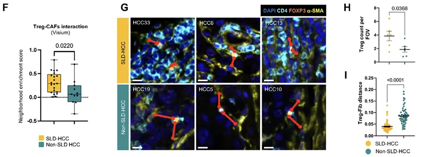
Fig.4
五：TNFSF14-TNFRSF14介导的Treg-成纤维细胞相互作用与SLD-HCC的免疫治疗抵抗相关
为了评估Treg-成纤维细胞相互作用的配体-受体（L-R）对，作者进行了COMMOT分析，考虑了空间距离和信号方向性。从CosMx数据中识别了11个在SLD-HCC中富集的共同信号通路，这些通路涉及Treg-成纤维细胞和成纤维细胞-Treg的相互作用（Fig.5A），除此之外，作者还对Visium数据进行了NICHES分析，识别了12个仅在SLD-HCC肿瘤边缘富集的L-R对，其中只有肿瘤坏死因子超家族成员14（TNFSF14）-肿瘤坏死因子受体超家族成员14（TNFRSF14）在SLD-HCC与非SLD-HCC之间的COMMOT评分显著更高（Fig.5B），作者发现在SLD-HCC中，：TNFSF14-TNFRSF14相互作用沿肿瘤前沿富集，而在非SLD-HCC中则远离肿瘤边界（Fig.5C）。对解卷积的Visium数据进行了COMMOT分析，发现Tregs和成纤维细胞之间的TNFSF14-TNFRSF14相互作用评分更高（Fig.5D）。mIF分析进一步验证了这一发现，显示在SLD-HCC的边缘，TNFSF14-TNFRSF14的表达富集（Fig.5F）。除此之外SLD-HCC中，非应答者的TNFSF14-TNFRSF14 COMMOT评分显著高于应答者，但在非SLD-HCC患者中未观察到这种差异（Fig.5G）。以上结果表明TNFSF14-TNFRSF14信号通路在SLD-HCC中存在重要的生物学意义。
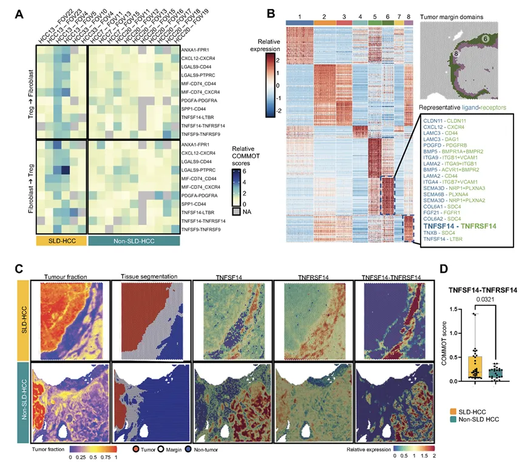
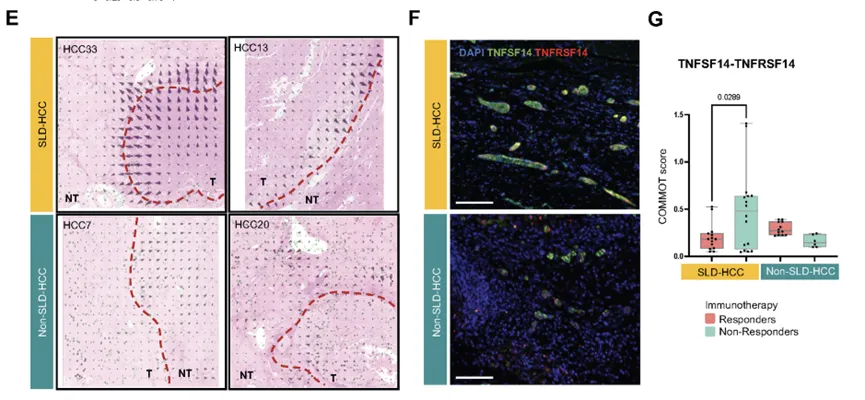
Fig.5
六：TNFSF14-TNFRSF14介导的Treg-成纤维细胞相互作用与SLD-HCC的免疫治疗抵抗相关
最后，为了验证TNFRSF14在免疫治疗抵抗中的作用，作者建立了一个小鼠模型，通过喂食高脂饮食（HFD）7周来诱导脂肪性肝微环境，随后进行小鼠肝癌细胞的原位移植（Fig.6A），移植后，肿瘤生长5天后，随后每两周进行2周的治疗，使用同型对照、抗PD-1、抗TNFRSF14或抗PD-1和抗TNFRSF14抗体的联合治疗。结果显示联合治疗显著减少了肿瘤负荷，其中五只接受治疗的小鼠中有两只表现出完全的肿瘤消退（Fig.6B-C），联合治疗导致了强烈的肿瘤内免疫反应，表现为肿瘤内Tregs的比例减少，以及活性CD8+ T细胞和活性记忆CD4+ T细胞水平的增加（Fig.6D），bulk RNA测序结果显示，抗TNFRSF14单独或与抗PD-1联合治疗富集了免疫激活通路，而抗PD-1单药治疗与脂质代谢和胶原生物合成的信号相关，包括白细胞介素-13信号，这是纤维化的已知驱动因素（Fig.6E）。通过对SLD-HCC的小鼠模型的研究，作者发现阻断TNFSF14-TNFRSF14信号通路可以增强对免疫治疗的反应。
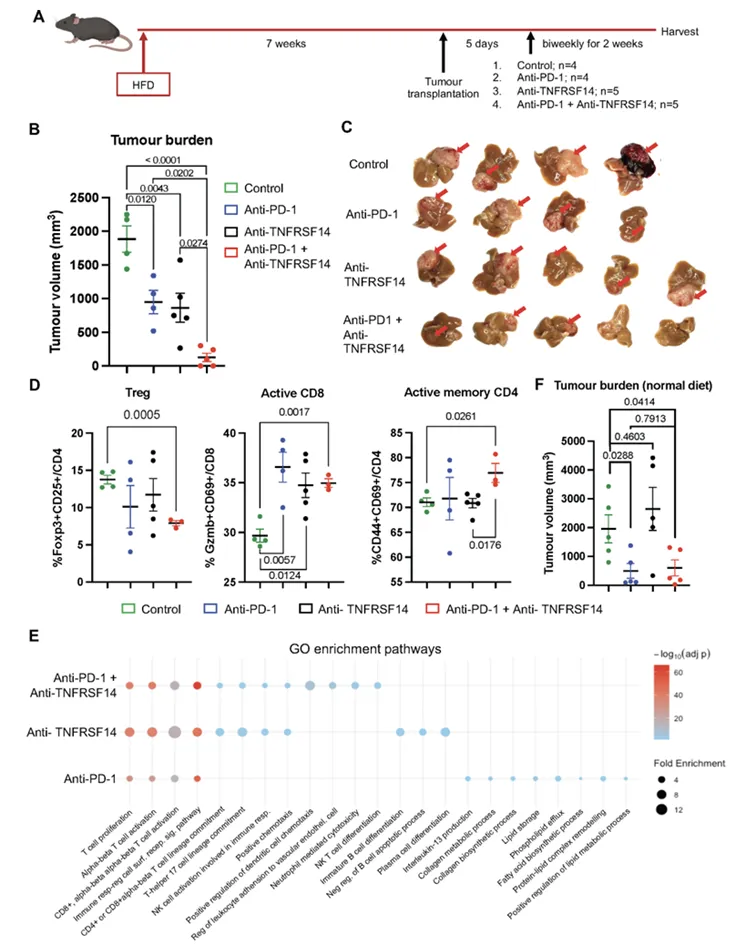
Fig.6
三、总结讨论
该研究通过综合单细胞RNA测序，空间转录组学和CyTOF免疫表型分析等 多组学分析，深入剖析了脂肪性肝病相关肝细胞癌（SLD-HCC）的肿瘤微环境，揭示了关键的免疫-基质相互作用，特别是TNFSF14-TNFRSF14介导的调节性T细胞（Tregs）与成纤维细胞的相互作用， 这些相互作用与免疫治疗抵抗密切相关。研究发现，SLD-HCC具有免疫抑制和“冷”肿瘤微环境的特征，表现为细胞毒性CD8+ T细胞的耗竭和免疫抑制性记忆CD4+ T细胞及Tregs的富集。通过小鼠模型验证，阻断TNFSF14-TNFRSF14信号通路可以显著增强抗肿瘤免疫反应，改善SLD-HCC的治疗效果。这些发现不仅加深了我们对SLD-HCC生物学的理解，还为未来的精准治疗提供了重要的理论基础。

如何联系我们

 留一个领取资料、免费两周学习版服务器的微信号[Biomamba_zhushou]，方便各位随时交流。同时我们也构建了交流群矩阵，欢迎大家入群讨论。
大家可以阅读完这几篇之后添加给生信入门初学者的小贴士如何搜索公众号过往发布内容
留一个领取资料、免费两周学习版服务器的微信号[Biomamba_zhushou]，方便各位随时交流。同时我们也构建了交流群矩阵，欢迎大家入群讨论。
大家可以阅读完这几篇之后添加给生信入门初学者的小贴士如何搜索公众号过往发布内容
已有生信基地联系方式的同学无需重复添加

 您点的每个赞和在看，我都认真当成了喜欢
您点的每个赞和在看，我都认真当成了喜欢